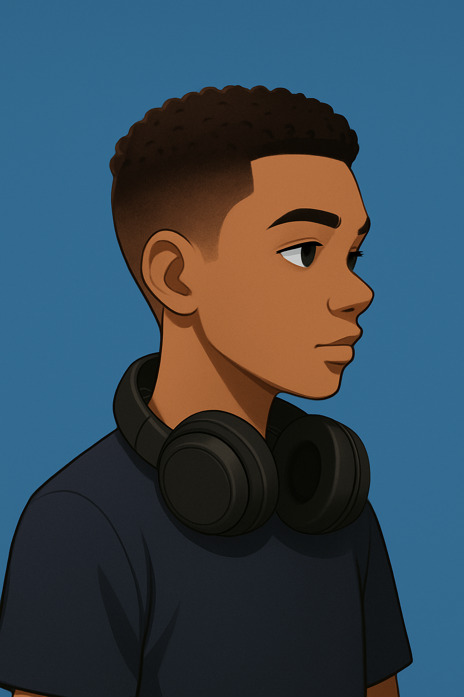

I am Ronald Etim Okuk, a 14-year-old from Akwa Ibom State, Oron LGA, Nigeria, born in November 2010. My journey in technology started with a curiosity about how things work, which quickly grew into a passion for programming and problem-solving. I enjoy working on projects such as games, websites, and coding experiments that allow me to apply what I learn and improve my skills. I’m passionate about technology, creativity, and continuous learning, and I love challenging myself with coding problems, even when they feel tough at first. My goal is to keep growing as a developer, explore different areas of tech, and eventually use my skills to make a positive impact in my community and beyond.
